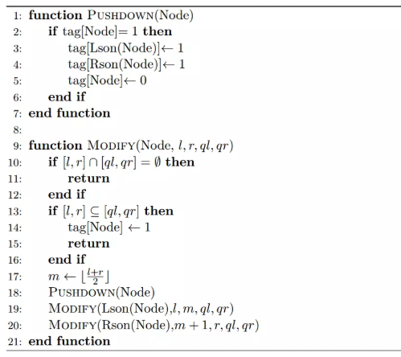

九条可怜是一个喜欢数据结构的女孩子，在常见的数据结构中，可怜最喜欢的就是线段树。
线段树的核心是懒标记，下面是一个带懒标记的线段树的伪代码，其中tag数组为懒标记：

其中函数 $\texttt{Lson}(\text{Node})$ 表示 $\text{Node}$ 的左儿子，$\texttt{Rson}(\text{Node})$ 表示 $\text{Node}$ 的右儿子。
现在可怜手上有一棵 $[1, n]$ 上的线段树，编号为 $1$。这棵线段树上的所有节点的tag均为 $0$。接下来可怜进行了 $m$ 次操作，操作有两种：
$1\ l\ r$，假设可怜当前手上有 $t$ 棵线段树，可怜会把每棵线段树复制两份（tag数组也一起复制），原先编号为 $i$ 的线段树复制得到的两棵编号为 $2i − 1$ 与 $2i$，在复制结束后，可怜手上一共有 $2t$ 棵线段树。接着，可怜会对所有编号为奇数的线段树进行一次 $\texttt{Modify}(\text{root}, 1, n, l, r)$。
$2$，可怜定义一棵线段树的权值为它上面有多少个节点tag为 $1$。可怜想要知道她手上所有线段树的权值和是多少。
 Comet OJ
Comet OJ